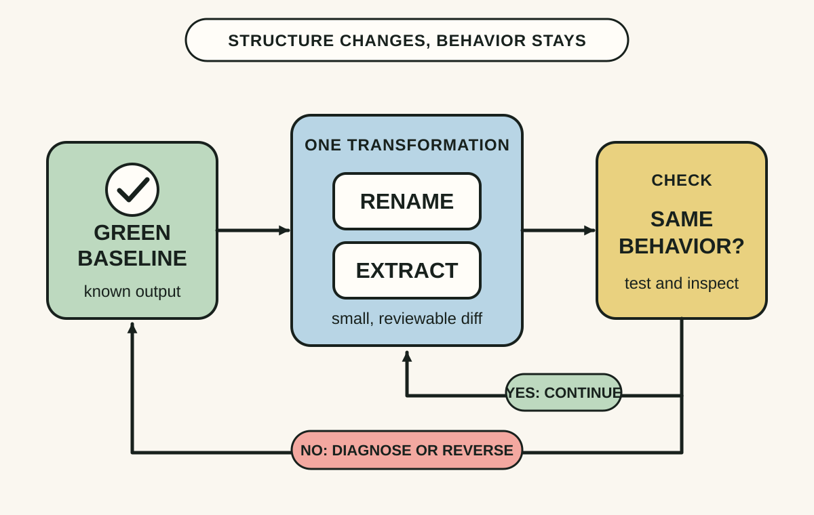
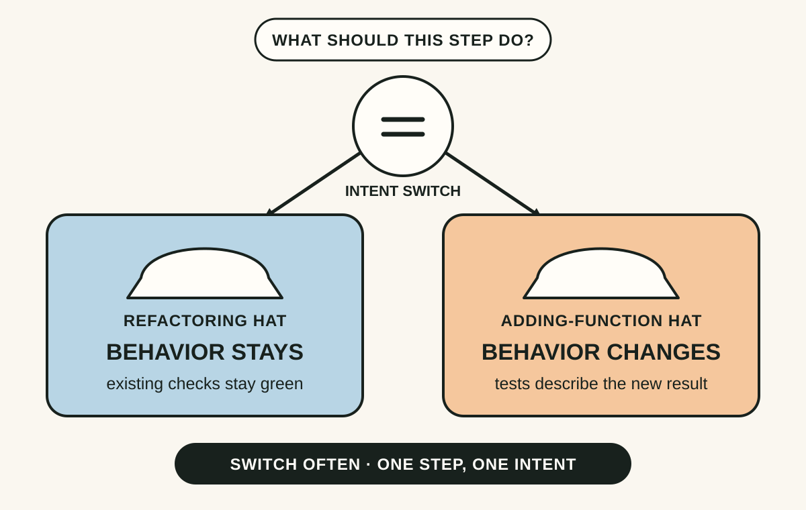
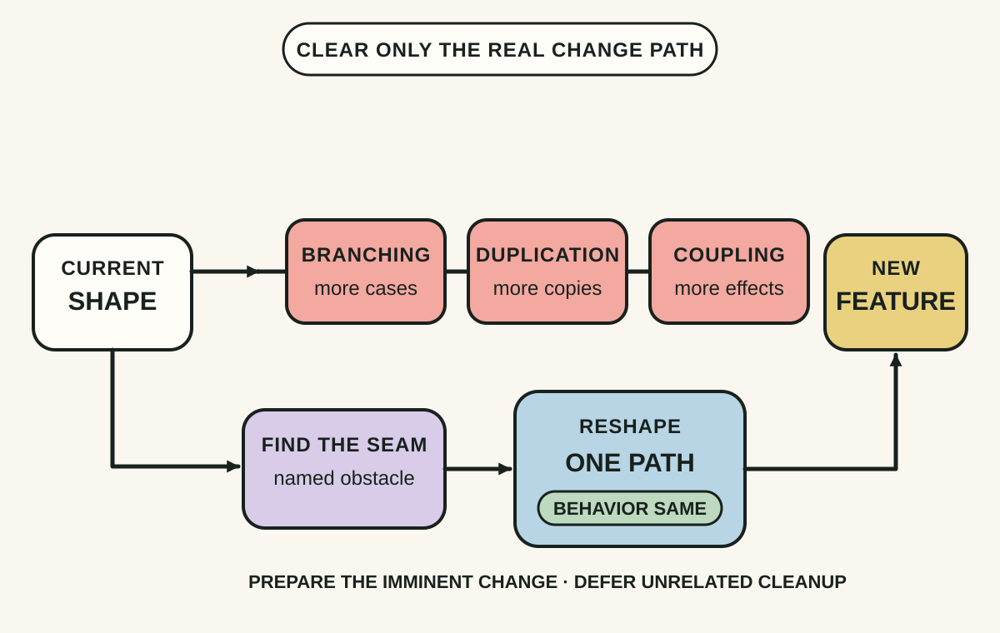

Daily lesson ·
Refactoring
Improve code without changing what it does by making small verified transformations, separating structural work from feature work and reshaping only the path that an imminent change needs.
Idea 1
Change structure in verified small steps #
The idea
Fowler defines refactoring as changing the internal structure of software without changing its observable behavior. The goal is not a rewrite with the same requirements; it is a sequence of named transformations, each small enough to understand and verify before the next one begins.
Small steps create a tight feedback loop. Establish a green baseline, make one structural move, then compile and test. If behavior changes, the recent step is a narrow place to investigate. The cumulative design improvement can be substantial even when each individual edit looks modest.

Why it matters
When edits are narrow and the baseline is known, failures carry more information. Reviewers can also reason about intent more easily, and the code need not remain broken while a large restructuring is completed.
Apply it today
Choose one small area you expect to edit and record the focused test or observable output that currently passes.
Make one behavior-preserving transformation, such as a local rename or a short function extraction.
Run the same check immediately and inspect the diff before taking another step.
Caveat or failure mode
Small does not mean safe by definition. Weak tests can miss changed timing, exceptions, serialization, reflection, public API use or side effects, and automated refactoring tools can contain bugs. Match verification to the real observable contract and stop when the change cannot be checked confidently.
Idea 2
Wear one hat at a time #
The idea
Fowler passes on Kent Beck's two-hats metaphor. Under the refactoring hat, every step is intended to preserve observable behavior and the existing tests should stay green. Under the adding-function hat, behavior changes, so tests may be added or changed to describe the new result.
A developer may switch hats every few minutes, but one edit should have one intent. The separation makes a failing test easier to interpret: during refactoring it signals that structure work probably changed behavior, while during feature work it may describe the gap being implemented.

Why it matters
Mixed-intent edits force a reviewer to separate accidental behavior changes from deliberate ones. Clear hats reduce that ambiguity, simplify rollback and make test failures more diagnostic.
Apply it today
Before the next code edit, write either REFRACTOR or ADD FUNCTION in a scratch note.
If the intent changes, finish or revert the current small step and verify the code before switching hats.
Keep the final diff or commits separable enough that a reviewer can see which behavior was meant to change.
Caveat or failure mode
The metaphor is a reasoning aid, not a demand for bureaucracy or a separate pull request for every rename. Some tools and framework migrations blur the boundary, and tests sometimes need restructuring too. The useful discipline is explicit behavioral intent, not ceremonial labels.
Idea 3
Prepare the path of the next change #
The idea
Fowler describes preparatory refactoring as reshaping existing code when its current structure makes an imminent feature awkward. First make a behavior-preserving change that exposes the right seam or moves responsibility; then add the feature through that easier path.
The scope comes from a real change, not a general desire for cleaner code. The preparation can pay for itself by reducing branching, duplication or coupling in the feature step, while the two hats keep the structural move and the new behavior separately verifiable.

Why it matters
A concrete requirement supplies a stopping rule and exposes which structure actually resists change. This avoids both forcing a feature through the wrong seam and launching an open-ended cleanup programme.
Apply it today
Name one change you expect to make soon and trace the functions or modules it must cross.
Mark the first point where the current structure would force duplication, a special case or an unrelated dependency.
Write the smallest behavior-preserving move that would expose a cleaner seam before the feature is added.
Caveat or failure mode
Preparation is waste when the requirement is speculative, the obstacle is cheap to tolerate or the proposed refactor spreads across unverified boundaries. Time-box discovery, preserve public contracts and stop once the imminent change has a clear, testable path.
Knowledge check · 6 questions
Learning check
Answer all 6, then check your answers. Your first result stays in this browser, and each explanation appears after you check. A 3-question review can appear on the homepage from tomorrow.
6 questions not yet answered.
Today's experiment · 10 minutes
Run one verified refactoring loop
- Choose a small function you expect to touch soon and run one focused test or capture one observable baseline.
- State the hat: behavior must stay the same.
- Make one local rename or short extraction using the IDE when appropriate.
- Rerun the same check and inspect the diff; revert if the result changed or the contract is unclear.
Observable result: You finish with either one green, reviewable structural improvement or a clean reversal plus a precise note about the missing evidence.
Retrieval practice
Spaced recall
- From A Philosophy of Software Design: which form of complexity makes a small requirement spread across many places?
- From Working Effectively with Legacy Code: where could a test seam reduce the risk of changing behavior you cannot yet observe?
- From The Mythical Man-Month: how might a local structural improvement support conceptual integrity without creating a competing design?
Verification
Source notes
These links support the attributed claims and edition details; applications and extensions are labelled in the lesson.
- Martin Fowler: Refactoring, definition, scope and 2nd Edition details
- Addison-Wesley Professional: Refactoring, 2nd Edition publication record
- Martin Fowler: Workflows of Refactoring, two hats and preparatory refactoring
- Martin Fowler: worked example of preparatory refactoring
- Refactoring.com: catalog supporting the 2nd Edition
- Wang et al. 2024: empirical study of bugs in automated refactoring engines
One-sentence takeaway